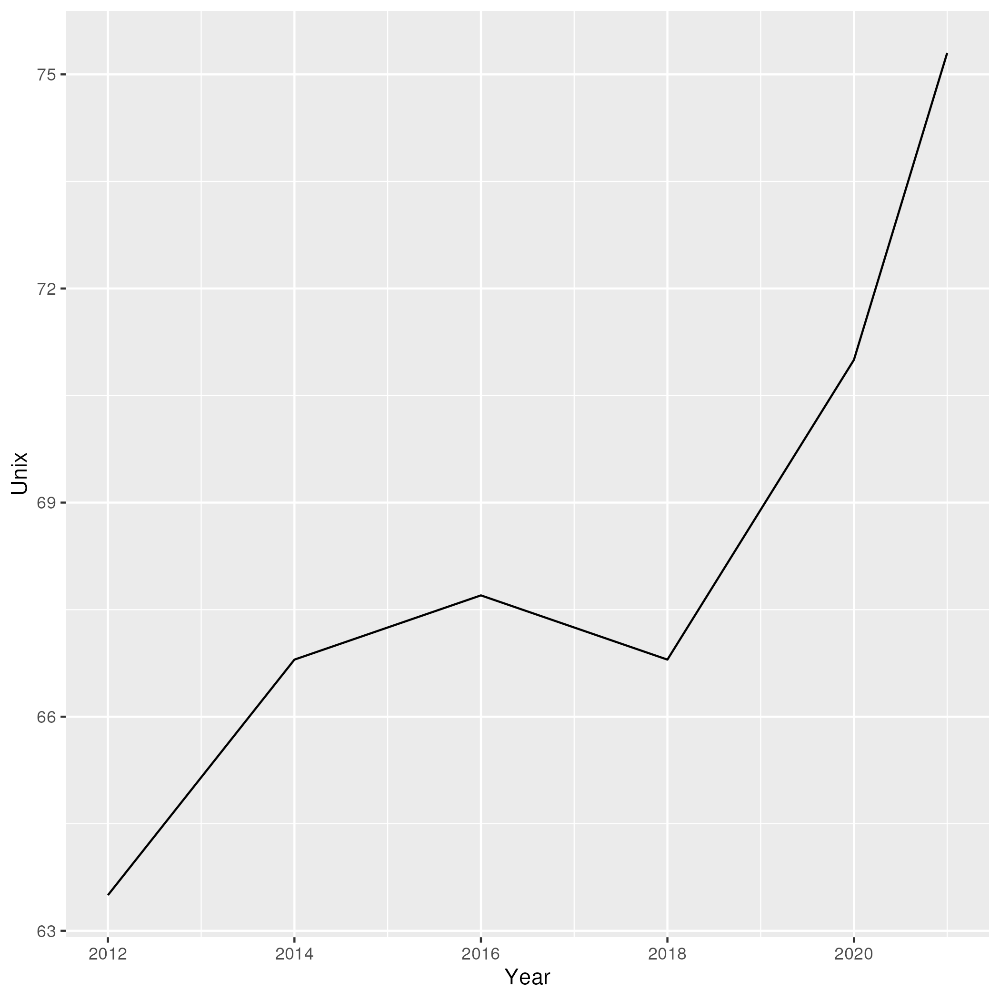

Table of Contents
- 1. Why Learn Unix
- 2. Introduction to Computers
- 3. How to Understand Computer Languages
- 4. Introduction to Unix Shells
- 5. Shell Concepts
- 6. Foreground and Background Processes
- 7. Linux Distributions
- 8. Linux Variants and Package Managers
- 9. Concluding Notes
1 Why Learn Unix
Unix, generally in the form of Linux, but also commonly encountered as the underlying idiom of OSX and other important systems, powers the world.
| Source | Month | Year | Unix | Windows |
|---|---|---|---|---|
| W3Techs | May | 2021 | 75.3 | 24.8 |
| W3Techs | Jan | 2020 | 71.0 | 29.0 |
| W3Techs | Jan | 2018 | 66.8 | 33.2 |
| W3Techs | Jan | 2016 | 67.7 | 32.3 |
| W3Techs | Jan | 2014 | 66.8 | 33.2 |
| W3Techs | Jan | 2012 | 63.5 | 36.5 |
library(tidyverse); print(ggplot(servers, aes(Year, Unix)) + geom_line());

And the result:
Figure 2: Percentage of servers running unix like operating systems over time.
Some very popular data science software (RStudio Server, Jupyter/Labs) runs on Linux (even if you access them via a web browser on any platform).
This means that if you become a working data scientist or want to support yourself working with many data scientific tools as a researcher, some knowledge of Unix will be useful to you.
If that weren't enough, the true key to portable data science is Docker. It is true that you can run Docker in Windows but the configuration of docker containers requires a good working knowledge of the Unix idiom, since most containers are Linux based.
For this book, Linux based Docker Containers will be the norm. For Windows users I highly recommend using the instructions located here:
https://docs.docker.com/docker-for-windows/wsl/
to set up both Windows Subsystem for Linux (which will allow you to run a Linux environment natively on Windows) and setting up the appropriate Docker install on top of it.
Mac users can use the standard Docker install. Linux users will typically know what they want to do, but the short version is install Docker via the instructions appropriate to your distribution and make sure you are in the docker group.
NB: Users of Apple Silicon Macs might find using the rocker/verse images upon which we base most of the course problematic (they are not compiled for ARM processors). Someone has hacked together a version for Apple Silicon Macs:
https://github.com/elbamos/rstudio-m1
And you might be able to get the Rocker images running by enabling rosetta. See this thread:
https://github.com/rocker-org/rocker-versioned2/issues/144
Will will discuss Docker in greater detail in later chapters.
2 Introduction to Computers
If you were born after 1990 or so there is a good chance you've never seen a text-based shell. Modern computers of the most common variety (smartphones) do an even more aggressive (or successful, depending on your attitude and needs) job of protecting you from the underlying operating system. Thus it is worth a brief conceptual review:
A computer, even a smartphone, is a machine with a processor, which performs mathematical operations on data, memory, which is volatile storage (it will be erased in the event that the computer is turned off) which forms the short term memory of the machine, and non-volatile storage (disks, solid state memory, even, sometimes still, spinning rust) which is persistant data store which survives even when the machine is off.
At the most basic level, a computer reads data from a disk into local memory and its processor reads a program out of that memory, executing instructions which modify the data in memory and/or write it back to long term storage.
In the early days of computing this was the conceptual world the compute programmer inhabited as well: interacting with a computer was the process of telling it, in great detail, which memory to access, what to do with it, and how to store or output the results.
Since those days the trend has been towards even greater levels of abstraction. Now, a typical smartphone "protects" the user from most of these details: you never think explicitly, about the distinctions between storage and memory or about the details of how programs work.
3 How to Understand Computer Languages
A programming language is a program which takes text (represented as a "string" of characters) and interprets it to produce some sort of value or side effect.
In order to understand a computer programming language you need to build a model of this process in your mind. The process of transforming text into values and actions is called "evaluation" or "interpretation" in the lingo of computer science and as we learn to get around in the shell we will need to accumulate a set of "evaluation rules" in our mind. The more rules we accumulate the more we will understand shell scripting.
When we get to learning R and Python the same process will apply.
4 Introduction to Unix Shells
We will now dive much deeper into the computer than you may have before. What may be surprising about this jump is just how much more water there is beneath us still: Unix Shells, while providing what must seem like shockingly low level access to the workings of a machine compared to modern graphical user interfaces, still afford us an almost entirely abstract representation of our computer, albiet one which has traded implicitness for explicitness to a great degree.
A shell (in this context) is a textual interface between you and the services provided by your operating system. From the shell we can do all the things we ordinarily do from a graphical user interface: inspect files, launch programs, organize data, poke and peek at various system resources and settings. We do these things by executing commands.
Before we dive into the details you might ask yourself: why would we want to have such low level access? It is true, these text-mode shells impose a substantial cognitive burden on the user, particularly at first. What do we purchase with that additional cognitive energy?
- control - the shell gives us enormous, fine grained, control over the resources the computer gives us.
- reproducibility - because all the actions we might undertake with the shell are represented as text, we can easily copy and paste them into a file and re-run them.
4.1 Running a Shell
If you are on Linux or OSX you will want to run your Terminal application. If you are working on a Windows machine you may want to install Git Bash, Cygwin, or install Ubuntu or another Linux variant in a Virtual Machine or spin up an Ubuntu container in Docker.
4.2 Control
The unix Shell is loosely organized under the banner of "The Unix Philosophy". Whereas graphical user interfaces tend to become monoliths from which it is difficult to escape, the Unix Philosophy suggests that tools (programs) should:
- do one thing
- do it well
This philosophy is enabled by a very simple organizational principal: almost everything in Unix is represented as a file. All programs operate on files, typically by reading an input file and producing an output file. More complex outcomes are acheived by stringing many small programs together, each operating on the output of the previous until a desired result occurs. Text based files are very commonly the inputs and outputs of these processes.
4.3 Reproducibility
Unix Shells are text based interfaces. While it can seem onerous, initially, to have to laborously type out each desired command to the shell, doing so is very traceable. After we understand what we want to do by interacting with a shell directly, we can copy and paste the commands we've concocted into a "shell script" and re-execute them. Repeatative tasks can be trialed a few times and then run over and over again and gradually refined.
When you combine this fact with tools like git, which make it easy to record the history of a file over time, you have system for ensuring that what you do is recorded for posterity and reproducible.
Graphical User Interfaces, in contrast, introduce many non-meaningful degrees of freedom (for instance, the precise x, y coordinate of a folder on your desktop) which make it difficult to automate workflows for them, even when such tools exist.
Learning to use the Shell will teach you a powerful way of simple and easily orchestrating work your computer does.
5 Shell Concepts
5.1 Many Shells
Unix supports many different shells which behave similarly. Throughout this course I will be assuming bash because it is the most common. I'll be trying to write bash code which will run in most other shells (most notably zsh, which is recently the default OSX shell) for simplicity. But if you run into an issue, make sure you are running bash by simply typing:
bash
5.2 Types of Data
- Strings: an ordered collection of characters.
- Numbers
On the shell things tend to pass back and forth between these types pretty fluently. This is bad design but we have to live with it.
The most important thing to bear in mind is that when I say something is "just a string" I mean that the computer doesn't know what to do with it - its just purely data.
5.3 REPL
The shell is one example of a "read, eval, print" loop. It
- reads an input (typically a line of text)
- evaluates it (turning it into an action or side effect or value of some sort)
- and then prints the result (or nothing, if a side effect)
At its most superficial level this is how we interact with a shell:
ls
4.png my-commands unix.html unix.org unix.pdf unix.tex z.pdf z.png
Reading is trivial - the input you type is just a list of characters. Evaluation is where things get tricky:
5.4 Evaluation
A theme of this course is that all programming languages do more or less the same thing: they translate text into actions. If you develop a good mental model of that process then you understand the language.
Given the ubiquity of Bash, its evaluation model is surprisingly complicated. Luckily for us, we will be concerned with its simplest aspects.
Superficially and in the simplest case, bash does the following when you type a command:
- the text is split into tokens on the spaces
- the first token is assumed to be a command you want to execute. Bash tries to find a file which implements this command by looking it up on the "PATH" (of which more later).
- the subsequent tokens are passed to the command as "arguments". Arguments are additional pieces of information the command may want or need to change the way it executes.
So when we typed "ls" above, bash read this as us wanting to run the command "ls" which it found on our hard drive. Then it saw that we passed no arguments to the command, so it executed it without any.
5.4.1 Eg 1
ls -t -l
total 156 -rw-rw-r-- 1 toups toups 30610 Aug 25 10:13 unix.org -rw-rw-r-- 1 toups toups 28591 Jun 17 20:30 unix.html drwxrwxr-x 2 toups toups 4096 Jun 17 20:00 my-commands -rw-rw-r-- 1 toups toups 7457 Jun 7 11:39 z.png -rw-rw-r-- 1 toups toups 53969 Jun 4 15:08 unix.pdf -rw-rw-r-- 1 toups toups 1483 Jun 4 15:08 unix.tex -rw-rw-r-- 1 toups toups 12641 Jun 4 15:01 z.pdf -rw-rw-r-- 1 toups toups 6534 Jun 4 14:38 4.png
In the above example, the shell reads "ls -t -l", splits it apart on
the spaces like this: [ls, -t, -l] finds the ls command, and
passes the -t and -l arguments to it. Note that these arguments
are just passed as strings to the ls command. It is up to ls to
decide what, if anything, they mean. In this case, they mean "sort the
file list by modification time" (-t) and "print out more information
about the files" (-l)
5.4.2 Eg 2
#something_silly a b c
The above will generate an error like this:
bash: line 1: something_silly: command not found
5.5 The PATH and other environment variables
When a string is evaluated the shell must find what command we want to run. How does it do so?
Some background: apart from a few built in commands (the so-called
builtins) commands in shell scripts are just executable files stored
somewhere on the hard drive. The command which tells us where such
commands qua files are located:
which which
/usr/bin/which
A good piece of jargon to have in your head here is that which
"resolves" to /usr/bin/which.
If you haven't seen unix style file locations, note:
- on a unix system every file lives beneath the so-called "root" of
the file system, called
/. - anything between two
/(called path separators) is a /directory. - the last term may be a directory or a file. In this case, it is the
executable file which implements the
whichcommands.
which resolves in the same way that Bash resolves, but how does that
work?
They look in something called an environment variable called PATH. You can see what an environment variable holds like this:
echo $PATH
/usr/local/texlive/bin/x86_64-linux:/usr/lib/rstudio-server/bin:/usr/local/sbin:/usr/local/bin:/usr/sbin:/usr/bin:/sbin:/bin
To understand this behavior we need to add a new rule to our mental "evaluation engine":
When we see a $ followed immediately by a name we look up the value of the variable named and insert it into the string. This happens before the other rules are executed.
Apparently, PATH contains a series of locations on the filesystem
separated by ":" characters. Bash searches this list in order to find
executables during command evaluation.
So in the case of which it looks in
/home/toups/.local/bin(no hit)/usr/local/local/sbin(no hit)/usr/bin(hit!)
By modifying this environment variable we can modify the way bash looks up commands. But how would we create our own command to test out this ability?
Let's create a directory
And then let's create a directory:
mkdir my-commands readlink -f my-commands
/home/toups/work/courses/bios611/lectures/02-unix/my-commands
(your file will obviously be somewhere else on your personal computer).
And now lets create the file
#!/bin/bash echo hello world
We can do this with this shell magic
cat <<EOF > my-commands/hello.sh echo hello world EOF
First we need to tell our Unix that we want to give the file "hello.sh" permission to act as an executable:
chmod u+x my-commands/hello.sh
And then we can
PATH="$(readlink -f my-commands):$PATH" hello.sh
hello world
In order to understand this result we need to add another rule:
If we see a name followed immediate by an equal sign and then a value, modify or create a new environment variable of that name with the specified value. No regular evaluation occurs but environment variables themselves are expanded before setting the value.
If some of the above steps are a little confusing to you, that is ok - we're not going for a full understanding of working on the command line: we want just enough to get around.
We will develop more as we go.
The PATH isn't the only environment variable. What variables are defined will vary a lot by system and situation, but you can see a list of all of them by saying:
env | head
SHELL=/bin/bash SESSION_MANAGER=local/cscc-laptop:@/tmp/.ICE-unix/2031,unix/cscc-laptop:/tmp/.ICE-unix/2031 QT_ACCESSIBILITY=1 SNAP_REVISION=1161 XDG_CONFIG_DIRS=/etc/xdg/xdg-ubuntu-wayland:/etc/xdg XDG_SESSION_PATH=/org/freedesktop/DisplayManager/Session0 XDG_MENU_PREFIX=gnome- GNOME_DESKTOP_SESSION_ID=this-is-deprecated SNAP_REAL_HOME=/home/toups SNAP_USER_COMMON=/home/toups/snap/emacs/common
5.6 Variables
You can declare your own variables or modify those that already exist (assuming they aren't read only).
The easiest way to declare a variable is:
VARNAME=somevalue echo $VARNAME
Note that when we declare a variable we do not precede the name with
a $. The dollar sign is what tells Bash to look the variable value
up when we want to use it somewhere.
With variable definition and usage rules in our head, we can now extend our mental model of bash evaluation.
- for every line in a script a. perform variable substitution (wherever we see a $NAME look up the value and insert it into the line) b. if the line is a command, do command evaluation otherwise do variable assignment
The only really important remaining ingredient is non-variable substitution.
Consider again the following line from the above example:
PATH="$(readlink -f my-commands):$PATH"
Ordinarily no evaluation occurs on the right hand side of an
assignment. The material there is just treated as a string (or a
number, if it happens to be a number). But by using a $(...)
construct we can perform a substitution: the interior of the $(...)
is evaluated like a command and the result is inserted into the line
where it appears.
We can use this to compose together multiple commands. Consider that
ls -t | head -n 1 will return the most recently modified file. head
<filename> will print out the first few lines of a file. If we want
to print the first few lines of the most recently modified file:
head $(ls -t | head -n 1)
* Why Learn Unix Unix, generally in the form of Linux, but also commonly encountered as the underlying idiom of OSX and other important systems, powers the world. #+tblname: servers | Source | Month | Year | Unix | Windows | |---------+-------+------+------+---------| | W3Techs | May | 2021 | 75.3 | 24.8 |
(The most recently modified file is this document!).
5.7 stdin, stdout, stderr and pipes
We have one more important element of the shell to learn. Recall that shell commands communicate by reading input from somewhere and writing it out to a new location. Most often the place they read from is the "standard input" (abbreviated stdin). And the most common place they output things is the "standard output". If there is an error of some kind most processes report this on another file called the "standard error."
In the above example, when we used the command head we passed a
filename in as a command line argument and the result was printed to
the standard output.
We can also redirect the standard output to a file:
ls -t > files-in-order head files-in-order -n 3 rm files-in-order
files-in-order unix.org unix.html
The syntax <COMMAND> > file sends the standard output to file.
But often creating a temporary file is a hassle if we just want to apply many commands in sequence. Thus we can also "pipe" one command's output to another's input. In that case the second command reads from the output of the previous instead of from the stdin file.
ls -t | head -n 3
unix.org unix.html my-commands
The | (called a "pipe") means: take the output from the first item
and send it to the second. We can pipe many times in a row.
ls -t | head -n 3 | grep y
my-commands
The output of ls goes to head and the output of head goes to
grep. Some bash scripts are little more than a long series of
pipes. Learning to program this way is very enlightening and we'll see
a similar "chain of operations" approach in R and Python.
5.8 Conventions to bear in mind
The shell itself doesn't enforce any convention whatsoever on the arguments passed to a command. Each space separated collection of characters counts as an argument and a command may interpret them in any way it wishes.
However, there are some conventions that you'll typically see.
5.8.1 The sub-command pattern
Many of the tools we'll use in this course will use the sub-command pattern. In this pattern a command will implement a set of sub-commands. These are typically invoked by mentioning the command and then the sub-command without any prefixes. For example:
git status
Invokes the status sub-command of the command
git. Sub-commands can and often do take additional arguments
which are treated just like any other shell argument.
git diff --stat
In this case the --stat is a command line switch, something
which we recognize as modifying the behavior of the command.
5.8.2 short and long options
Command line arguments are also given in the form of short and long options.
A short option is written as -<single-letter> and a long option
is written --<option-name>. It is often the case (but not
always) that a short option has a long option which represents the
same thing and vice versa. For example
ls -a
and
ls --all
mean the same thing. Options can take inputs, which just means one
or more tokens after the option without - or -- in front of
them.
For instance:
head -n 10 hello.txt
In the above example "10" is an argument to the -n option. In
this case it tells head that we want to print the first 10 lines
of the file hello.txt.
It is often the case that any arguments at the end of the argument list not preceeded by options that take arguments are files that the command operates on or otherwise creates or modifies.
ln -s hello.txt link-to-hello.txt
Here -s is a switch which takes no arguments and the last two
arguments to the command are interpreted as the source and target
of the ln command itself.
5.8.3 Warning
Not every shell command will follow these conventions. In
particular, find lets you specify long arguments with a single
- in front of them. But keeping these conventions in mind will
help you understand what is happening on the shell.
5.9 Important Commands
5.9.1 man
Short for "manual" - given a command name it returns information about using that command. Some commands are not documented this way but almost all the most common ones are.
man bash | head -n 10
BASH(1) General Commands Manual BASH(1)
NAME
bash - GNU Bourne-Again SHell
SYNOPSIS
bash [options] [command_string | file]
COPYRIGHT
Bash is Copyright (C) 1989-2018 by the Free Software Foundation, Inc.
I consult a man page at least once a day while working so don't be afraid to lean on this command.
5.9.2 apropos
apropos takes a keyword and returns a list of commands that might be
related. Also handy if you are new to a system, although these days
google is probably more effective. Sometimes handy in a pinch, though.
apropos lisp
lispmtopgm (1) - convert a Lisp Machine bitmap file into pgm format pgmtolispm (1) - convert a portable graymap into Lisp Machine format picolisp (1) - a fast, lightweight Lisp interpreter pil (1) - a fast, lightweight Lisp interpreter
5.9.3 cd & pwd
cd changes the current working directory and pwd tells you the
current working directory.
OLD_DIR=$(pwd) cd /tmp # the temporary directory on a Linux machine. touch test # touch just creates an empty file or updates a file's modification time. cd $OLD_DIR
Also interesting: pushd and popd.
5.9.4 find
find lets us search for files in a variety of ways. A simple
example:
find . -iname "*.png"
./4.png ./z.png
find is very powerful and also a little weird in places. But it is
so useful that having a basic working knowledge of the command will be
very much worth it.
5.9.5 grep
grep lets you search for things in files:
grep -n hello unix.*
unix.html:776:<label class="org-src-name"><span class="listing-number">Listing 6: </span>my-commands/hello.sh</label><pre class="src src-bash"><span style="color: #7f7f7f;">#</span><span style="color: #7f7f7f;">!/bin/</span><span style="color: #1c86ee;">bash</span> unix.html:778:<span style="color: #cd6600;">echo</span> hello world unix.html:785:"hello.sh" permission to act as an executable: unix.html:789:<pre class="src src-bash">chmod u+x my-commands/hello.sh unix.html:799:hello.sh unix.html:808:hello world unix.org:344:#+CAPTION: my-commands/hello.sh unix.org:348:echo hello world unix.org:353:"hello.sh" permission to act as an executable: unix.org:356:chmod u+x my-commands/hello.sh unix.org:368:hello.sh unix.org:373:hello world unix.org:643:grep hello
Given a string and a list of files as arguments, grep prints out the
file and line number (with the right command line switch -n) where
the string occurs.
5.9.6 xargs
xargs deals its inputs to a command. The use case is when we want
the output of one command to go to the command line of a second
command, as opposed to going to the standard input of the second
command.
If that isn't super clear, don't worry about it. I introduce xargs
here because I want to show one very useful use case:
Suppose I want to find everywhere a particular function is mentioned in all the R files in a project. Then I say:
find . -iname "*.R" | xargs grep read_csv
If we were to pipe the first term directly to grep we would just
search the filenames for the function read_csv. We don't want that -
we want to search each file with grep. Using xargs in this way
allows us to first find a set of files and then search for them.
6 Foreground and Background Processes
It is possible to launch a command in "the background". Let's look at a silly example.
The command "sleep" just waits for a specified number of seconds before completing:
sleep 10 # sleep for ten seconds
If you want to access the console again you have two choices: if you press CTRL-c (the control key and "c" at the same time) you will send the process the "kill" signal. Sometimes this will fail however, if the process has gone really rogue.
Another possibility is to press CTRL-z, which stops the process and gives you control. The process isn't dead, though, just frozen. When you stop a process like this the terminal prints out an id:
> sleep 10 # sleep for ten seconds CTRL-z [1]+ Stopped sleep 100 >
You can now either re-foreground the process via
> fg 1
OR you can "background" the process:
> bg 1
Note that backgrounding a process won't stop it from printing to your terminal, which can be very disruptive. These process management functions were designed for the old days when you'd interface with a mainframe via a single "dumb" terminal (imagine a green glowing screen).
Nowawadays you can start as many terminals as you want and, indeed, most terminal programs allow you to keep many tabs open. Don't be afraid to use them.
6.1 Process IDs and Killing Processes
Sometimes a process goes wrong and needs to be terminated. The
details of this process depend on the unix, but typically you use
the command ps to list the processes which are running and then
use kill to terminate the process usings its process id. If your
terminal is blocked you may need to background the process
first.
7 Linux Distributions
The most popular Unix-like operating systems are Linux and OSX. That would seem simple enough except that Linux is an umbrella which covers a huge variety of unix-like operating systems. In fact, Linux technically refers just to the so-called "kernel" of the operating system - the basic software that intermediates between the computer hardware and the user. But the kernel alone is not typically enough to make a functional computer, so a set of utilities (often drawn from something called the GNU Project) provides the basic utilities (including but not limited to things like the commands listed in the previous section). But even Linux and the GNU System together don't constitute a useful system (for most cases). Additional tools and conventions are layered on top to form a "distribution" of Linux.
There are hundreds of actively developed Linux distributions although the number left over after you eliminate those distributions which are largely similar, based on the same set of tools, would be smaller. As of the time of this writing some of the more popular linux distributions are Arch, Ubuntu, Mint and Centos/Rocky Linux.
8 Linux Variants and Package Managers
The primary reason we want to develop some comfort with Linux is because we will be using it to build environments for doing data scientific work. And the most frequent thing we will do to set those environments up is install software.
Throughout this book we will be using Ubuntu Linux (in the form of the
rocker/verse Docker containers) as our basis for our data science
projects. Sometimes we might want to extend that container with other
tools like Python and Jupyter. Adding software to a Linux system is
the job of a package manager.
Complicating this discussion is the fact there are a variety of package managers for a variety of linux variations.
Here, we will almost always be using apt to install packages (unless
we use a programming language specific package manager, of which more
later). But be aware that at some point in the future you might have
to look up how to use another system's package manager.
9 Concluding Notes
Unix Shell Scripting is a discipline unto itself. The fact is that many people make almost their entire careers out of knowing and wrangling shell scripts. Despite the fact that these technologies are decades old, they still glue together an enormous amount of what makes the software world go round.
As a data scientist you'll need to be comfortable writing and reading some of that glue. Shell scripting is also enormously empowering.